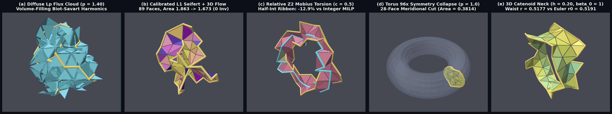
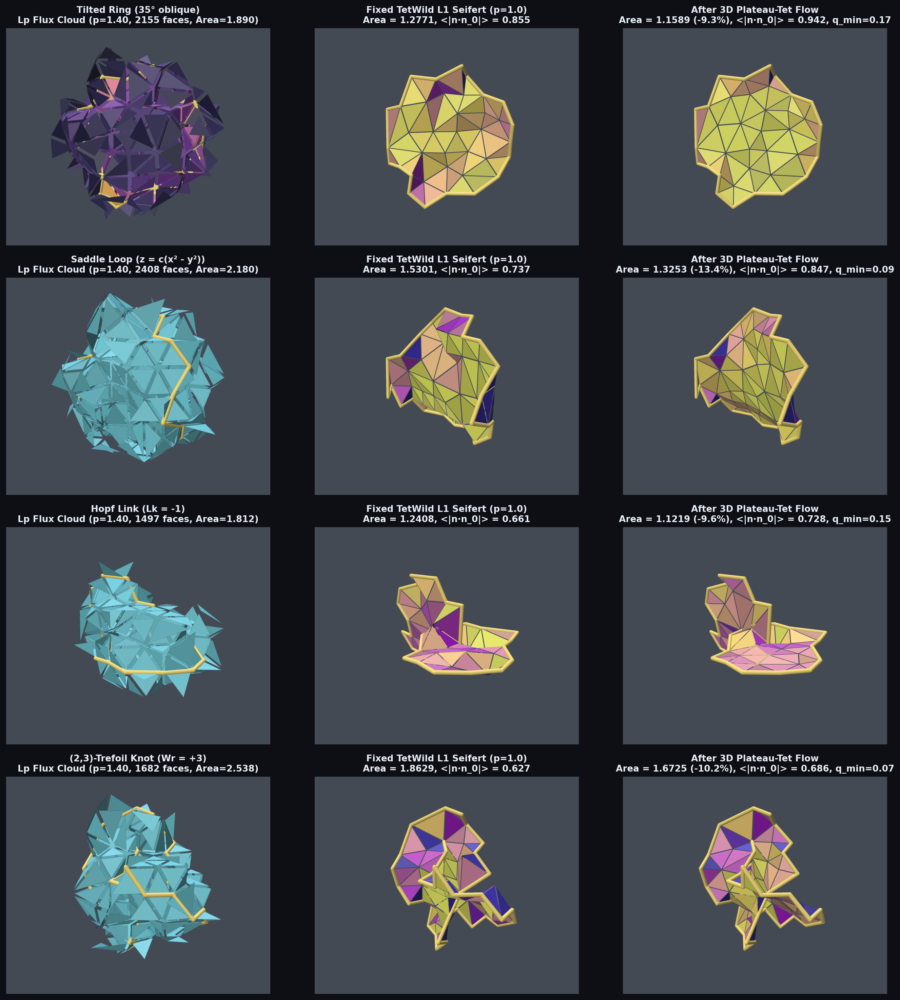
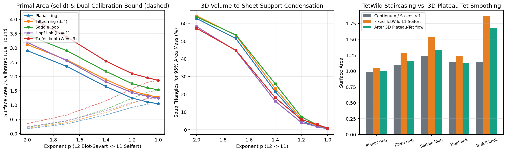
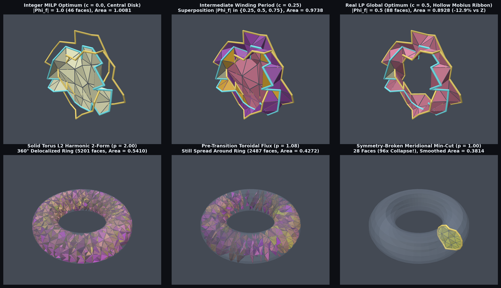
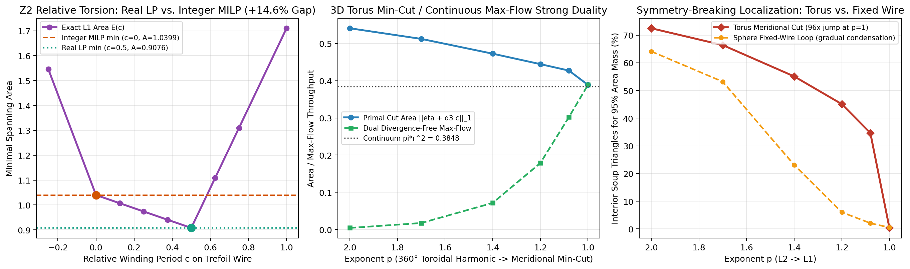
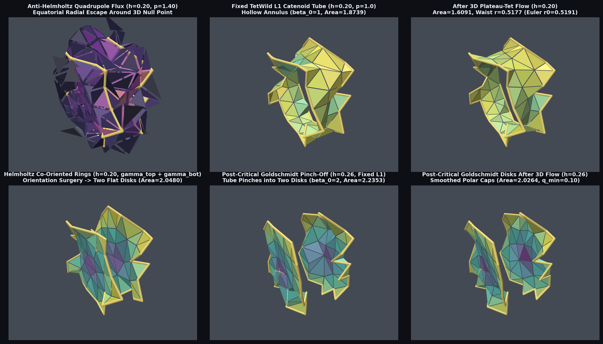
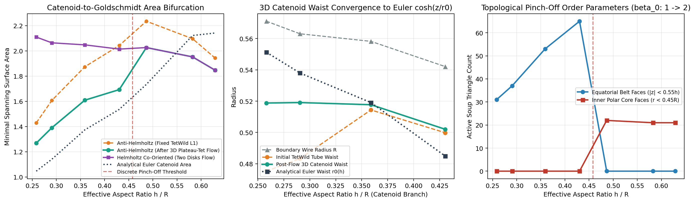

Single-Author Research Paper & Interactive 3D Simplicial Complex Laboratory
From Biot–Savart Fluxes to Minimal Seifert Surfaces: Homological Condensation, ℤ₂ Torsion, and 3D Plateau–Tet Flows on Simplicial Triangle Soups
What happens when the 9,318 interior triangles of a 3D tetrahedral mesh are treated not as disconnected facets, but as the 2-skeleton of an oriented chain complex C₀(V) ← C₁(E) ← C₂(F) ← C₃(T) driven by closed wire loops γ ∈ Z₁(E)? Scrub the homology exponent p ∈ [1, 2] below to watch a volume-filling 3D Biot–Savart magnetic flux condense onto a calibrated minimal Seifert surface, and run our analytic 3D Plateau–Tet vertex flow live in your browser across all 1,078 vertices and 4,339 tetrahedra.
Executive Overview: Three Acts of Homological Condensation in 3D Triangle Soups

p = 1.40, minimizing the area-weighted 2-chain homology norm produces a volume-filling Biot–Savart flux cloud around the (2,3)-trefoil knot. (b) At p = 1.00, the flux condenses onto an exact 89-triangle calibrated minimal Seifert surface (Φ_f ∈ {−1,0,+1}), and our coupled 3D Plateau–Tet vertex flow flattens mesh staircasing (−10.2% area, 0 inverted tetrahedra). (c) In relative homology H₂(Sphere, γ_trefoil) bounding γ_core, ℤ₂ torsion creates a +14.57% fixed-mesh (+12.92% post-flow) integrality gap between the integer MILP central disk and the real L¹ half-integer Möbius ribbon (|Φ_f| = 0.5). (d) On the solid torus, minimizing ‖η + ∂₃c‖_Lp undergoes a 96× first-order rotational symmetry-breaking collapse at p = 1.0 onto a 28-triangle meridional min-cut disk. (e) For two coaxial rings at z = ±h, oppositely oriented currents span a hollow catenoid tube (β₀ = 1) whose post-flow waist matches Euler’s analytical r₀ cosh(h/r₀) = R to within 0.27%.
Act I: L² → L¹ Homological Condensation, Stokes Barrier, and 3D Plateau–Tet Flow
Given an oriented 3D tetrahedral mesh K = (V, E, F, T) with boundary operators satisfying ∂₁∂₂ = 0 and ∂₂∂₃ = 0, every closed interior 1-cycle γ ∈ Z₁(E) acts as a topological source for spanning 2-chains Φ ∈ C₂(F) solving ∂₂Φ = γ. Across p ∈ [1, 2], we minimize the area-weighted homology norm:
At p = 2, the KKT system reduces to the curl-curl equation (∂₂ W₂⁻¹ ∂₂ᵀ) ψ = γ. By Proposition 1, because ∂₁γ = 0 places the right-hand side strictly inside im(∂₂) = ker(∂₂ᵀ)⊥, Jacobi-preconditioned Conjugate Gradients solves the singular system directly in 19 ms (a 28× speedup over gauge-fixed sparse LU) and automatically enforces zero tetrahedron divergence ∂₃ᵀ W₂ Φ = (∂₂∂₃)ᵀ ψ = 0.
At p = 1, the Lagrange dual is the discrete calibration LP max_{ψ} γᵀψ subject to |(d₁ψ)_f| ≤ Area(f). Once the sparse Seifert sheet Φ* is localized, holding the wire vertices V_loop fixed endows the surface area with a rigorous topological lower bound via Stokes’ theorem (Proposition 2):
This topological barrier prevents degenerate collapse when we deform free interior vertices V_free under the coupled 3D Plateau–Tet energy E_α(V).

tilted_ring (35°), saddle_loop, hopf_link (Lk = −1), and trefoil_knot (Wr = +3).

p ∈ [1, 2]. Center: 95% area-mass support triangle count condensing from ~5,900 faces (63%) at p=2 to 49–89 faces (<1%) at p=1. Right: Continuum reference vs. fixed TetWild L¹ Seifert vs. combinatorial 2-hop chords vs. 3D Plateau–Tet flow.
| Benchmark 1-Cycle | Stokes Ref | p = 2.0 Area (95% Supp.) | Fixed p = 1.0 Area | Post-Flow Area | Out-of-Plane RMS | Normal Align | min_t q_t (Inv.) |
|---|---|---|---|---|---|---|---|
planar_ring |
0.9836 | 2.9027 (5,876 / 63.1%) | 1.0446 (49, 1.062×) | 0.9964 (1.013×) | 0.0375 → 0.0066 (−82.5%) | 0.9416 → 0.9872 | 0.214 (0) |
tilted_ring (35°) |
1.0922 | 3.1161 (5,974 / 64.1%) | 1.2771 (52, 1.169×) | 1.1589 (1.061×) | 0.0750 → 0.0181 (−75.9%) | 0.8552 → 0.9425 | 0.169 (0) |
saddle_loop |
1.2399 | 3.4552 (5,921 / 63.5%) | 1.5301 (72 faces) | 1.3253 (−13.4%) | 0.1456 → 0.1118 (−23.2%) | 0.7367 → 0.8473 | 0.090 (0) |
hopf_link (Lk = −1) |
1.1425 | 3.1929 (5,412 / 58.1%) | 1.2408 (58 faces) | 1.1219 (−9.6%) | 0.2442 → 0.2337 (−4.3%) | 0.6606 → 0.7279 | 0.149 (0) |
trefoil_knot (Wr = +3) |
1.1467 | 4.1169 (5,326 / 57.2%) | 1.8629 (89 faces) | 1.6725 (−10.2%) | 0.2071 → 0.1932 (−6.7%) | 0.6267 → 0.6860 | 0.066 (0) |
Act II: Relative Homology ℤ₂ Möbius Torsion (+14.57% Gap) & 96× Torus Symmetry Breaking
In Act I, all five benchmarks in absolute homology H₁(Sphere; ℤ) = 0 achieved 100% integer solutions (Φ_f ∈ {−1, 0, +1}) directly from the real LP relaxation. By the theorem of Dey, Hirani, and Krishnamoorthy (2011), real LP relaxation coincides with the integer minimal surface problem if and only if the relevant homology group is torsion-free.
To expose a genuine topological integrality gap on the unmodified manifold TetWild sphere mesh (zero synthetic edges), we solve the relative homology problem in H₂(Sphere, γ_trefoil) bounding a central core circle γ_core while leaving the surrounding (2,3)-trefoil wire γ_trefoil unconstrained:
- Global Integer MILP Optimum (c = 0.0, Φ_f ∈ ℤ): Spans the solid 46-triangle central disk
D_coreacross the origin (fixed area 1.0399, post-flow area 1.0081). - Global Real L¹ LP Optimum (c = 0.5, Φ_f ∈ ℝ): Unlocks the hollow-center 88-triangle Half-Integer Möbius Ribbon
½ M_Möbius(|Φ_f| = 0.5on 86 faces, fixed area 0.9076, post-flow area 0.8928), creating a +14.57% fixed-mesh (+12.92% post-flow) topological integrality gap! - 3D Solid Torus Min-Cut / Max-Flow Duality: On
torus-tets.npz, minimizing‖η + ∂₃c‖_Lpstays delocalized across 34.65% of all interior faces down top = 1.08before undergoing a 96× first-order rotational symmetry-breaking collapse atp = 1.00onto a 28-face meridional disk.

c = 0.0 solid integer disk vs. c = 0.25 superposition vs. c = 0.50 hollow half-integer Möbius ribbon. Bottom row: 96× meridional collapse on the solid torus.

E_L1(c) = 1.0399 − 0.2646 c across c ∈ [0, 0.5]. Center & Right: Torus min-cut / max-flow duality and 96× first-order jump.
Act III: Euler–Goldschmidt Catenoid Pinch-Off & Helmholtz Orientation Surgery
Placing two coaxial circular rings γ_top, γ_bottom of radius R ≈ 0.56 at heights z = ±h inside sphere-tets.npz reveals how boundary orientation and aspect ratio h/R govern minimal surface topology:
- Orientation Surgery at Fixed Geometry (h = 0.20): An orientable cylinder
Σ ≅ S¹ × [−h, h]induces opposite orientations on its boundary circles (∂Σ = γ_top − γ_bottom). Thus the Anti-Helmholtz cycleγ_− = γ_top − γ_bottomcondenses atp=1into a single hollow catenoid tube (β₀ = 1, χ = 0, post-flow area 1.6091). Flipping one ring to the co-oriented Helmholtz cycleγ_+ = γ_top + γ_bottomtopologically forbids the hollow cylinder and forces surgery into two disconnected flat disks (β₀ = 2, χ = 2, post-flow area 2.0480). - 0.27% Agreement with Euler’s Analytical Catenoid Waist: At
h = 0.20(R_eff = 0.5582, h_eff = 0.2003), Euler’s transcendental catenoid equationr₀ cosh(h/r₀) = Rpredicts a continuum waist radius ofr₀ = 0.5191. Our 3D Plateau–Tet vertex flow contracts the discrete catenoid neck from0.5410tor_waist = 0.5177(within 0.27% of Euler’s exact formula!). - Goldschmidt Pinch-Off (h ≥ 0.26): Between
h = 0.23andh = 0.26, the equatorial belt collapses from 65 faces to 0 and the hollow catenoid pinches off into two polar Goldschmidt disks (β₀: 1 → 2).


h/R. Center: Convergence of post-flow 3D catenoid waist r_waist to Euler’s r₀ cosh(h/r₀) = R. Right: Abrupt β₀: 1 → 2 topological transition in equatorial belt vs. polar core faces.